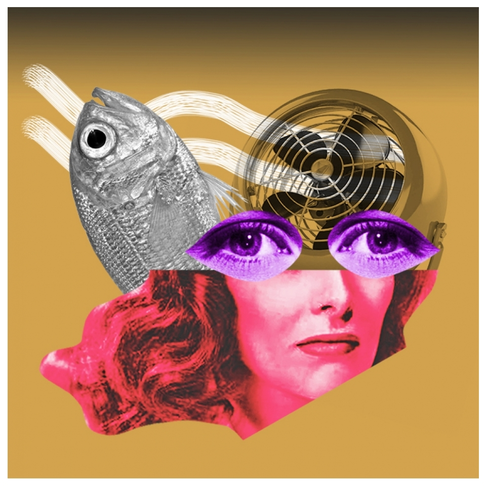

QUEM É ARTRUX
ARTrux | mundinho letrux br Arte ilustrando letícia letrux & cia desde 1982. não utilize minha arte sem autorização.
QUEM É LETRUX?
O documentário “Letrux: Viver é um Frenesi” já está disponível na plataforma Sesc Digital. A trajetória da cantora e compositora carioca Letícia Novaes é narrada no filme pelo diretor Márcio Debellian, que antes dirigiu o premiado documentário “Fevereiros”, sobre Maria Bethânia.
Com uma narrativa onírica entre passado e presente, o média-metragem costura recordações da infância e momentos marcantes da artista com amigos, fãs e ídolos, como a cantora Marina Lima. Confira o trailer: